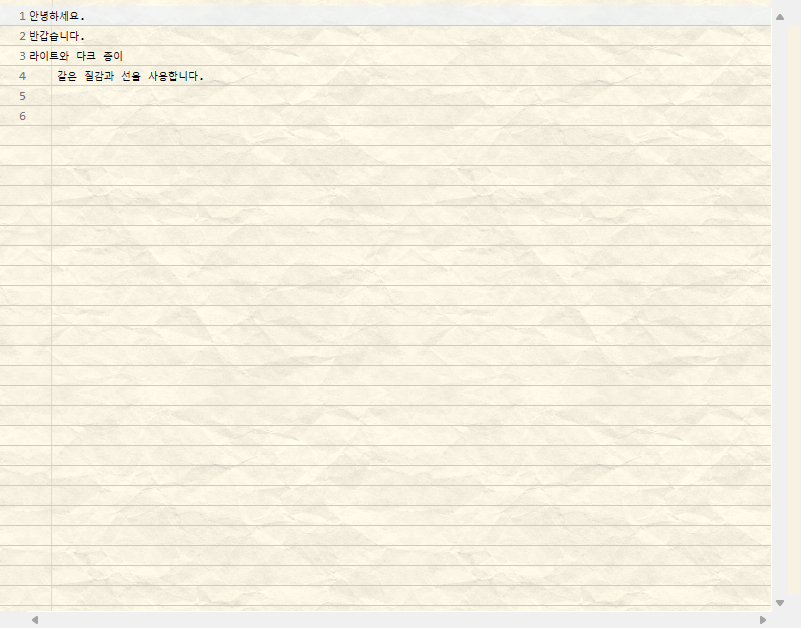
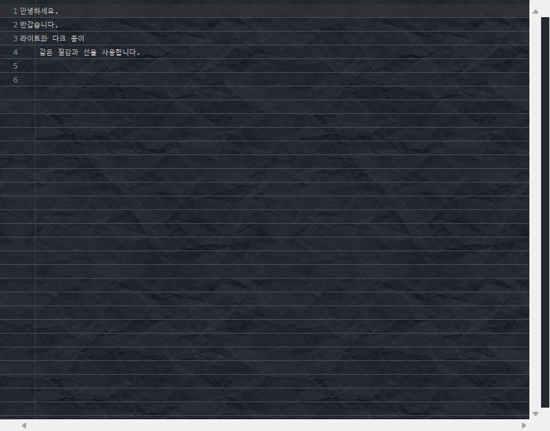

Download Paper 1.3.13 · SHA-256
Open Help → Install New Software… → Add… in Eclipse and use this update site:
https://pinnpublic.github.io/eclipse-paper/updates/
Select Paper, complete installation, and restart Eclipse.
Configure it under Window → Preferences → General → Editors → Text Editors → Paper / 노트 배경.
User manual and source code · Offline installers · Issues


MIT License · Copyright © 2026 pinnpublic